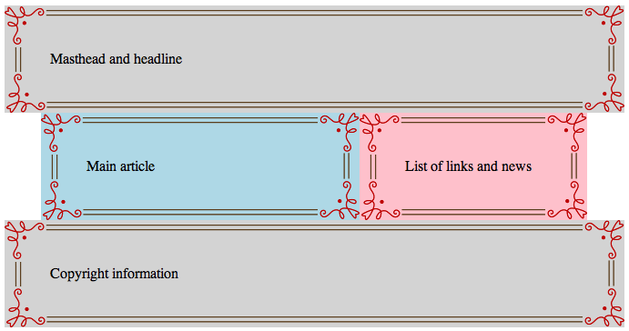

Lab 8: CSS: Layouts with Floating & Positioning
Goals
Learn about...
- How block and inline elements are positioned
- Absolute, relative, and fixed positioning
- Fixed, liquid, and elastic page layouts
- Techniques for creating two- and three-column layouts
Key Concept
Meaningful HTML structures such as articles, sections, and navigations area can be styled into multi-column layouts. In the recent past, web page layouts were often implemented using tables, which were hard to maintain. But more importantly, table-based layouts might not look appropriate in many web browser and they diminish the meaningfulness of the overall page structure.
Pre-lab
Pre-lab Reading
- Textbook pp 356 (Positioning Basics) - 369 (Fixed Positioning)
Pre-lab Activity
Use reading to answer the Pre-lab Questions. Be sure to complete the activity and answer the pre-lab questions in Blackboard by the due date.
In-lab
Info
Working with others
You should not collaborate with anyone outside of the designated two-hour lab session.
Preparation
- Always make sure you save your lab file in the appropriate folder, i.e., lab8.
- For file names, only use lowercase letter and never use spaces.
Activity
You can work together with a partner during lab. But you must complete this part of the lab on your own. You should not collaborate with your partner outside of the designated two-hour lab session.
Standard 2-Column Layout
- Read pages 381 and 382.
- In Notepad++, create a new filed called layout2.html and save it to your lab8 folder.
- Add the HTML tags needed for the web page to validate as HTML5 (i.e.,
html,head,title,meta, andbodytags) - Add a link to an external style sheet called layout2.css. The following code goes in the
head:<link rel="stylesheet" type="text/css" href="layout2.css"> - Add the markup shown on page 382 to the
bodyof your web page. This will add four logical divisions for storing content. - In Notepad++, create a new filed called layout2.css and save it to your lab8 folder.
- Add the styles shown on page 382 to the layout2.css file.
- To better understand the space occupied by each division, add a background color to each division. Make the header and footer divisions lightgray. Make the extras division pink and the main division lightblue. You will have to add a selector for the header. You can literally use the color names; just make sure there are no spaces in the color name (
background-color: lightblue). - Read and follow the instructions on pages 383-385. Add the wrapper division and the styles needed to make a two column, fixed width, and centered layout.
- Save layout2.html and layout2.css.
- Open layout2.html in a web browser and be sure it looks similar to the center layout in Figure 16-9 on page 385.
- Make sure layout2.html validates at http://validator.w3.org/#validate_by_upload
Full-Width Headers and Footers
- Save your layout2.html files as layout2f.html.
- Read the Figure 16-10 content on page 386 and change the structure of layout2f.html so that it has full-width headers and footers.
- Note that we do not actually have to change the external css file.
- Save layout2f.html.
- Open layout2f.html in a web browser and resize the browser window to better understand how this layout works.
- The header and footer are no longer nested inside the wrapper, which allows them to resize to the full width of the browser window.
- Make sure layout2f.html validates at http://validator.w3.org/#validate_by_upload
Decorative Borders
- Download border.png to your lab8 folder.
- Add the following code to your previous file layout2.css:
border: 50px solid transparent; border-image: url(border.png) 50 50 round;Add the properties above to the appropriate divisions to create a layout that looks like this:
 - Note that we are adding very thick (50px) decorative borders to all the divisions except the wrapper.
- To achieve the layout above, you must do the following:
- Set the margin and padding of all the divisions to zero
- Set the width of the wrapper to 800px
- Set the width of the main and extras divisions so that they can fit side-by-side inside of the 800px wrapper
- Hint: Remember that the main and extras divisions will have 50px borders on both the right and left side.
- Make sure layout2f.html validates at http://validator.w3.org/#validate_by_upload
- Show your instructor that layout2f.html is finished and validates.
{kind=link}
Three-Column, Fluid Layout
- From section about standard 2-column layout above, save your layout2.html files as layout3.html.
- From section about standard 2-column layout above, save your layout2.css files as layout3.css.
- In layout3.html change the
linktag so it uses the layout3.css stylesheet. - Read the pages 386-387 and change the structure of layout3.html so that it has three columns as shown in Figure 16-11.
- Note that you must add additional markup to layout3.html and change the styles in layout3.css
- Save layout3.html and layout3.css.
- Open layout3.html in a web browser and resize the browser window to better understand how this layout works.
- Make sure layout3.html validates at http://validator.w3.org/#validate_by_upload
- Show your instructor that layout3.html is finished and validates.
Changing the Order of Columns using Negative Margins
- Download mountolympus-ex1.html and mountolympus-ex2.html to your lab8 folder.
- Complete exercises 16-1 and 16-2 on pages 388-391
- Show your instructor that mountolympus-ex1.html and mountolympus-ex2.html have the correct column ordering.
Deliverables
After you have completed layout2.html, layout2.css, layout2f.html, layout3.html, layout3.css, mountolympus-ex1.html and mountolympus-ex2.html:
Right-click on your lab8 folder and create a zip file (send it to a compressed folder).
Upload lab8.zip to Blackboard.